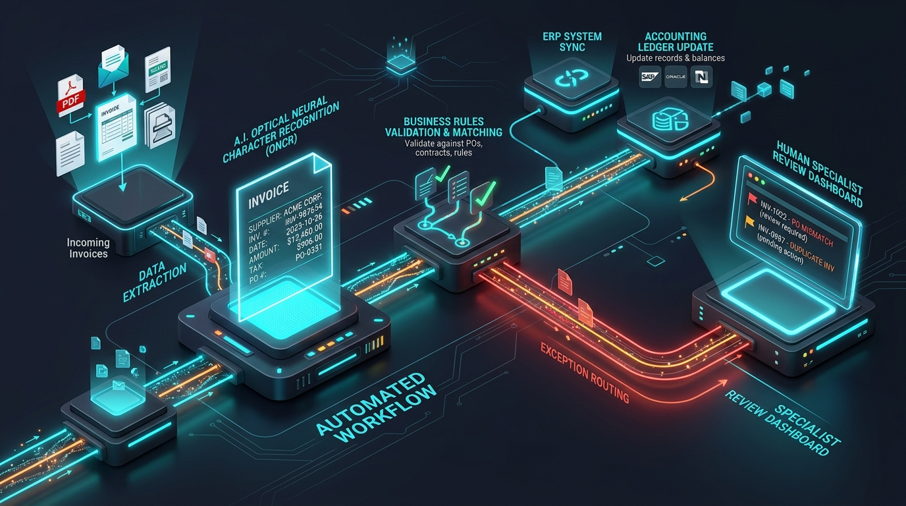

AI can write the email.
It can analyse the document. It can summarise the report. It can classify the request.
But then what?
Someone still has to copy the output, update the system, notify the next person, trigger the next step, and follow up.
That is where many AI implementations stop.
The AI works.
The workflow doesn’t.
And there is a big difference.
Table of Contents
1. The Problem With Adding AI to Individual Tasks
A business might introduce AI into several disconnected corners of its daily operation:
- AI writes customer emails.
- AI extracts information from invoices.
- AI summarises incoming documents.
- AI classifies customer service requests.
Each tool may perform its individual task remarkably well.
But if employees still have to manually move information between systems, the business hasn’t really automated the workflow.
The process now simply looks like this:
2. The Real Opportunity Is Between the Tasks
Think about what happens right after an AI system produces an answer.
Where does that answer go? Does someone:
- Copy it into the CRM?
- Update an accounting system or ledger?
- Draft and send a confirmation email?
- Create a task in project management software?
- Notify a team manager over Slack or email?
- Move the customer record to another pipeline stage?
- Wait days for manual sign-off and follow up later?
If the answer is yes, the AI is only solving one small fraction of the business process.
The greatest operational opportunity isn't necessarily to make the AI smarter.
It is to connect what happens before and after the AI.
3. AI Shouldn't Be the Whole Workflow (The 4 Pillars)
A useful and scalable way to design an intelligent enterprise workflow is to give each component a specific, well-defined responsibility:
AI can interpret unstructured information, extract context and meaning, and deal with ambiguous or variable inputs that rigid code cannot parse.
Deterministic automation triggers actions, enforces validation rules, routes data between systems, and propels a process from one stage to the next with zero lag.
Your CRM, ERP, accounting software, databases, or helpdesk platform remain the authoritative source of operational truth and business record.
Humans step in where nuance, high-stakes financial approvals, ethical discretion, or unusual edge cases require real-world discernment.
The result is not AI replacing the entire workflow.
It is AI becoming one highly effective, intelligent component working synchronously inside the workflow.
4. Take Invoice Processing: Traditional vs Connected
Consider a typical incoming vendor invoice:

Figure 2.0: Automated Invoice Processing Pipeline — cognitive OCR extraction, multi-tier validation, ERP synchronization, and exception handling.
The difference isn't simply that AI was added into the mix.
The difference is that the entire process is connected.
- AI handles the part that requires understanding (deciphering scanned PDFs, handwritten notes, varied formatting).
- Automation handles the predictable actions (moving data, checking thresholds, pinging servers).
- Business systems receive the information directly without human copy-pasting.
- People handle the exceptions and final approvals only when rules detect anomalies.
- The workflow keeps moving continuously 24/7/365.
5. This Is Where Automation Becomes More Valuable
Imagine an invoice arrives with:
- • Supplier information & tax ID
- • Invoice number & issue date
- • Line items & total amount
- • Tax (GST) details
- • Purchase order reference
AI can reliably extract all the relevant information from that raw PDF document.
But extraction alone doesn’t complete the business process.
The connected workflow then automatically:
Now the finance employee isn't manually moving information between five different browser tabs.
They are involved exclusively where their judgement actually matters. That is a much more meaningful use of AI.
6. The Goal Isn't to Remove People
Connected automation isn't about replacing people with software.
It is about removing people from work that doesn’t require their judgement.
- • Repetitive data entry and processing
- • Manual handoffs between teammates
- • Routine system record updates
- • Copying information between platforms
- • Sending repetitive email notifications
- • Standard administrative data checks
- • Critical business judgement
- • High-stakes commercial decisions
- • Meaningful customer relationships
- • Strategy, innovation, and business growth
- • Creative problem-solving
That is where human involvement creates genuine enterprise value.
7. Ask a Better Question (Workflow Diagnostic)
This is where businesses need to fundamentally change how they approach AI.
Instead of asking: “Where can we use AI?”
Ask:
“Where does this workflow actually need intelligence?”
That single question forces you to examine the entire end-to-end process:
The 7 Workflow Architecture Questions
- Where does information enter? Identifying origin APIs, emails, portals, or files.
- Where does it need interpretation? Pinpointing unstructured text or image inputs.
- What happens immediately after the interpretation? Structuring the extracted output.
- Which actions are predictable? Automating validation rules and status updates.
- Which systems need updating? Connecting CRMs, ERPs, accounting, and billing ledgers.
- Where does human approval matter? Embedding approval thresholds and governance gates.
- What happens when something goes wrong? Establishing graceful fallbacks and escalation routing.
Once you map those specific points, the precise role of AI becomes crystal clear.
• Everything that can be reliably automated should be automated.
• AI should be introduced where interpretation creates value.
• People should remain involved where judgement matters.
8. Don't Build an AI Tool. Build a Workflow.
This is the difference between adding a point solution to a business and actually redesigning how the organization operates.
An isolated AI tool might save an individual employee 10 minutes on one task.
A connected workflow transforms what happens from trigger to outcome across the entire business.
That means looking beyond individual tools and orchestrating how your entire stack functions together:
9. Your Business May Not Need More AI
It may need better-connected workflows.
Here is how to get started today:
- Start by identifying one process that still contains too many manual handoffs.
- Map every single step from initiation to final completion.
- Find where information gets stuck between platforms or people.
- Identify what genuinely requires intelligence vs deterministic rules.
- Automate what follows predictable rules without hesitation.
- Connect the systems directly through modern APIs and webhooks.
- Keep people positioned where their judgement and empathy matter most.
10. The iKOREX Approach to Connected Operations
That is the exact philosophy we champion at iKOREX:
Start with the workflow. Automate what can be automated. Add AI where it creates measurable value. And connect the systems that keep your business moving forward.
The smartest workflow isn't the one with AI everywhere.
It's the one where every technology has a job.
Ready to Connect Your Disconnected Workflows?
Book a complimentary 30-minute Workflow Audit with our engineering team in Melbourne. We will review your current manual handoffs and design a tailored architecture connecting your AI, business systems, and automated execution.
Schedule Your Free Workflow Audit →
Subin leads operations and product architecture at iKOREX, helping Australian businesses design robust, fail-safe automation architectures and deploy pragmatic AI solutions that generate measurable return on investment.